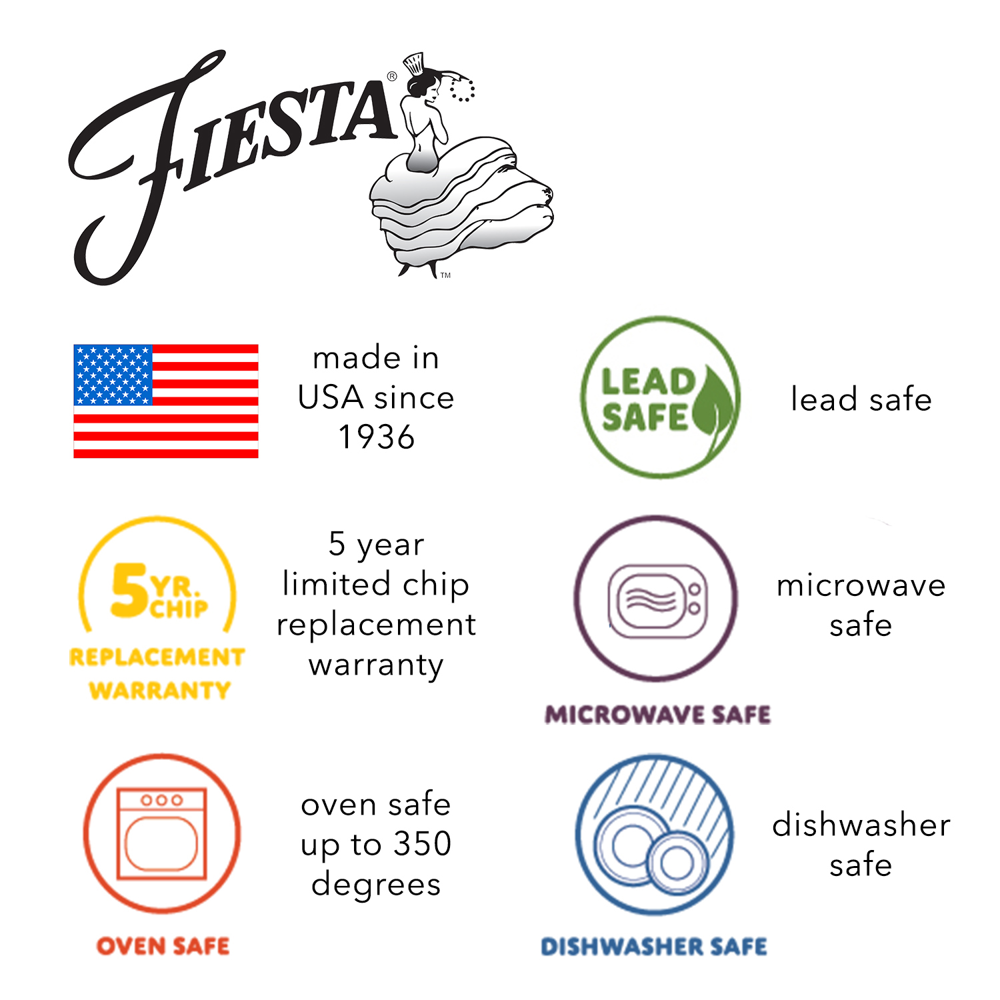

About
How this guide is built
This is an independent reference to the colors of Fiesta dinnerware, kept by Cav Lemasters. It is not affiliated with, endorsed by, or sponsored by The Fiesta Tableware Company.
I worked at The Fiesta Tableware Company (formerly The Homer Laughlin China Company) from June 2014 to March 2024, in digital marketing and software roles. My father spent 25 years there and my mother worked at Hall China; in this valley that is an ordinary family history rather than a remarkable one. This project is a fan's project built entirely from public information, and it deliberately does not include anything unannounced.
Where the color values come from
The Fiesta Tableware Company does not publish hex values for its glazes, so there is no official number to copy. Each hex here is a best-effort digital match, built from product photography, published reference material and comparison against physical pieces where I have them.
That hex is then the single source of truth. Everything else the site derives from a color — the CIELAB coordinates behind the closest-color rankings, the pairing suggestions, and the black-or-white label chosen for each swatch — is calculated from it at build time in sRGB with a D65 white point. Nothing is typed in twice, and nothing can drift out of step with the swatch beside it.
The honest caveat. A fired ceramic glaze is not a flat color. It varies with the production run, the thickness of the glaze, the shape underneath it and the light you are standing in — and then your screen adds its own interpretation. A swatch here will get you close enough to identify a piece or plan a table. It will not match a plate exactly, and no hex code could.
Production dates
Introduction and retirement years come from company announcements, collector references and contemporary press. Where sources disagree — and for a few of the vintage colors they do — the guide uses the date most commonly cited by the collector community and the timeline on the history page gives the surrounding context.
Colors that were produced in both eras under the same name — Red, Rose, Yellow, Turquoise and Chartreuse — get separate entries. The names carried over; the glaze recipes did not.
How the table-setting combinations are built
Each color page suggests a handful of combinations. The first, where one exists, is simply the pairing named in that color's own description — a person wrote that down, so it outranks anything a formula produces, and the page labels it as such.
The rest are derived, and each one states its rule: opposite hues, a single-family tonal ladder, three evenly spaced hues, neighbouring hues, or a neutral anchor. Two guards keep them usable. Colors closer than ΔE 12 are never put in the same set, because near-identical glazes side by side read as a mistake rather than a choice; and neutrality is measured by LCh chroma, not HSL saturation, since saturation badly misjudges very light and very dark colors — it scores Old Ivory at 43%, when perceptually it is almost colorless.
Every combination is made only of colors Fiesta has actually produced, and each swatch says whether you can still buy it.
"Closest colors" and ΔE
The closest-color list on each page is computed with CIEDE2000, the current standard for perceptual color difference. Values under roughly ΔE 2 are near-identical to the eye, under ΔE 5 are easy to confuse side by side, and above ΔE 10 read as clearly different colors. It is calculated from the hex values, so it inherits their caveats — but it is a genuinely useful first pass when you are trying to tell two blues apart.
Use the data
The whole dataset is one file: fiesta.json. Colors,
production years, shade families, descriptions and the company timeline all live there, and this
site is generated from it. You are welcome to use it — a link back is appreciated.
Corrections are genuinely welcome. If a date or a color looks wrong to you, please open an issue or send a pull request.
Accessibility
This site targets WCAG 2.2 level AA. Color is never the only way information is
conveyed: every swatch carries its name and hex code as text, every band in the color ribbon is a
real link with a real name, and every filter is reachable and operable by keyboard. Text meets AA
contrast in both light and dark themes, the theme follows your system setting unless you override it,
and animation respects prefers-reduced-motion.
If something here does not work with your assistive technology, that is a bug I want to hear about — please report it.
Sources
- Post 86 Reference Guide — color timeline
- Fiesta Tableware Company Collectors Organization
- Homer Laughlin China Collectors Association
- Texas Cooking — Fiestaware
- Wikipedia — Fiesta (dinnerware)
- DISHES: a Fiesta documentary
- The Fiesta Tableware Company
Trademark and images
Fiesta® is a registered trademark of The Fiesta Tableware Company. Color names and product photographs are used here for identification and reference. This guide makes no claim to those marks, and nothing here should be read as an official statement from the company. If you are looking to buy, go to Fiesta Factory Direct.
